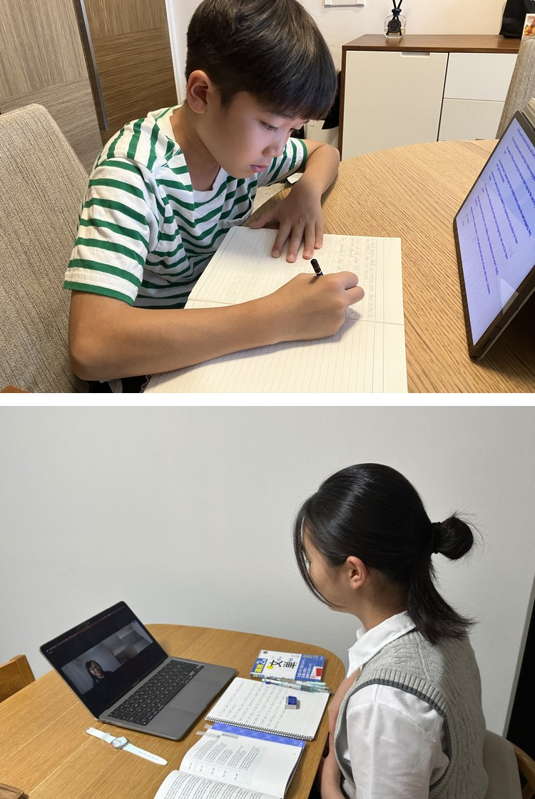

2015年の開塾以降
受験勉強と並走しながら“小学生・中学生で英検2級、高校生で準1級”を目指せる英語塾

無料体験レッスンはこちら
いつまでに2級合格できるか
FEATURES
短期で英検合格を目指せる4つの特徴
POINT01
高い英検合格率を実現
累計1,000名以上を
POINT02
受験勉強と並行可能
目標級・時期と
POINT03
学習効率を向上
バイリンガル講師の
POINT04
保護者様が忙しくても安心
計画の実行をフォローする
POINT 01
累計1,000名以上を合格に導いた英検ベースのカリキュラム
ESL clubでは2015年の開塾以降、英検をカリキュラムに用いて、着実な英語力の向上と英検合格に導いてきました。国際基準であるCEFRに対応した英検を用いることで、バランスよく4技能＋語彙力を高めていきます。一般的には、英検2級が高校卒業時の到達目標とされていますが、ESL clubでは、小学生、中学生の時点での高い合格率を誇っています。
ESL clubの小中学生の英検合格率
- 英検5級 100%
- 英検4級 88%
- 英検3級 86%
- 英検準2級 64%
- 英検2級 75%
※2023年度第2回の実績（ESL clubオンライン校）
※受験者のうち1次・2次受験双方に合格した生徒の割合
無料体験レッスンはこちら
いつまでに2級合格できるか